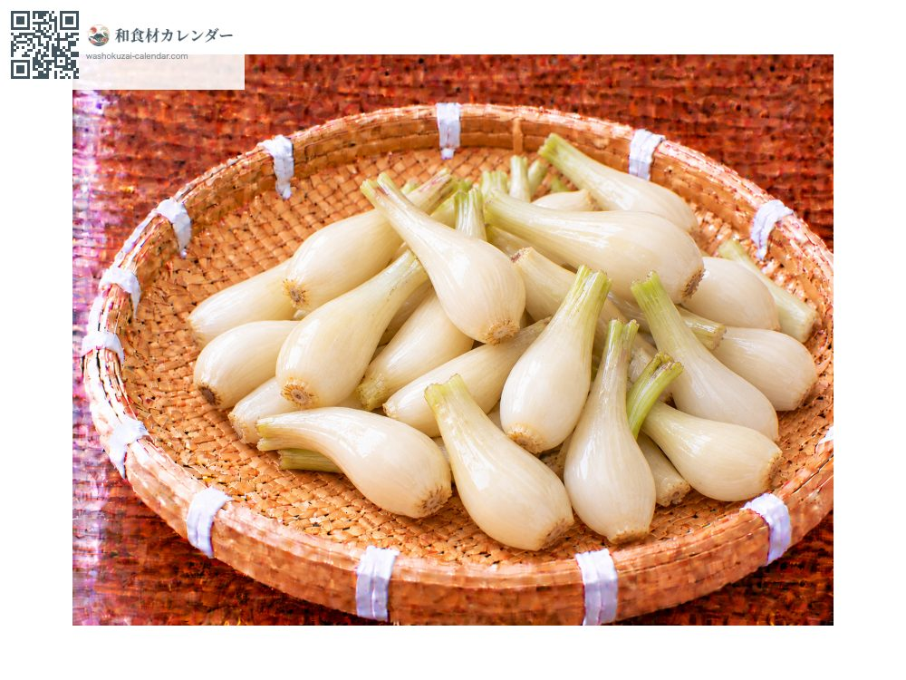
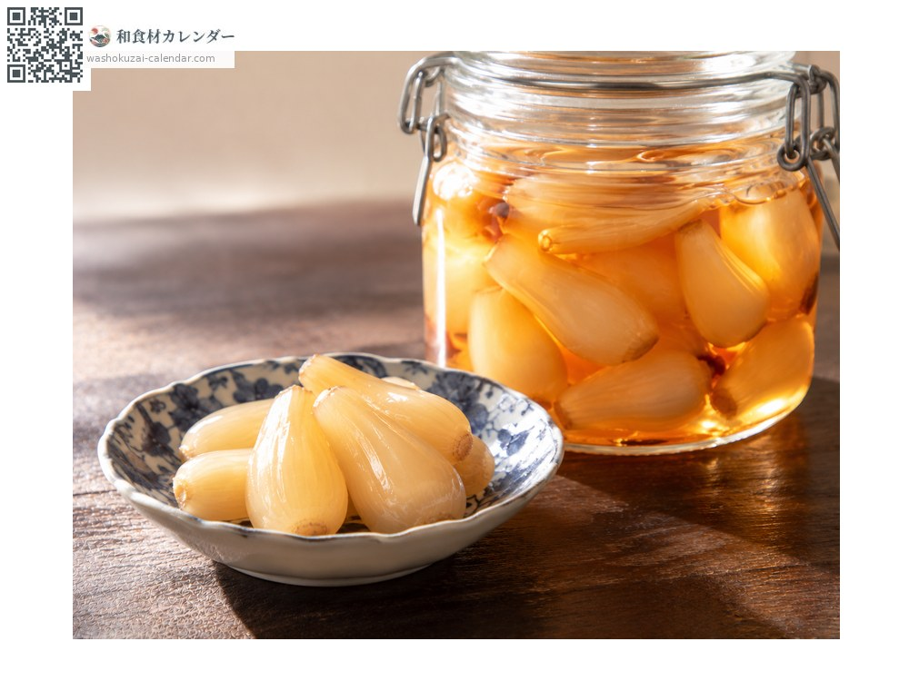
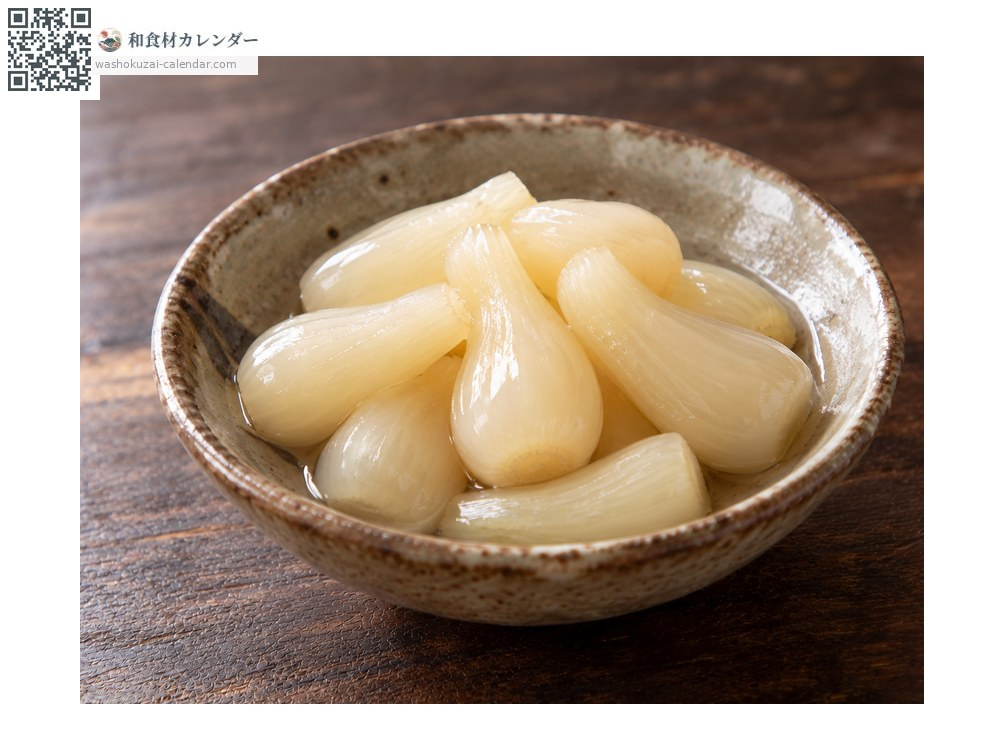
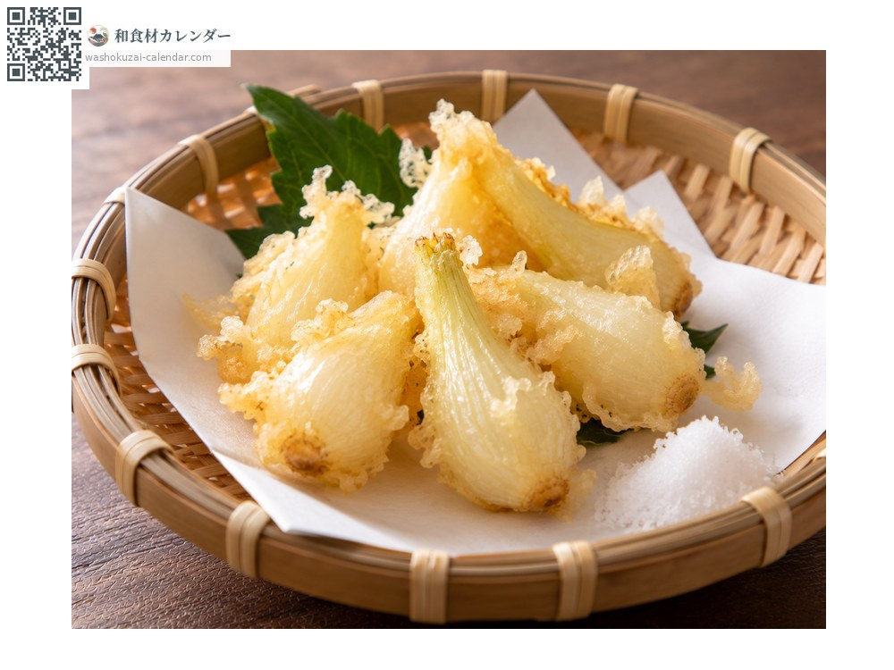
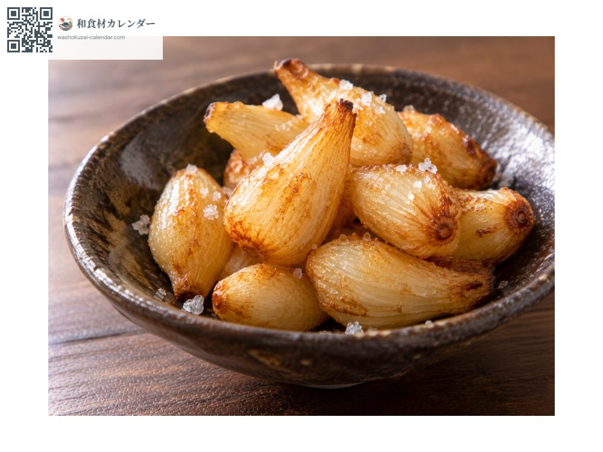

Vegetables
Rakkyo
らっきょう らっきょう rakkyo
Also known asrakkyo, rakkyou
At its best in May, Jun

When it is at its best
Jan
Feb
Mar
Apr
May
Jun
Jul
Aug
Sep
Oct
Nov
Dec
In seasonAvailable
How to cook

Pickled in sweet vinegar
The usual preparation. Ready to eat after about a month.

Salt-pickled
Lactic fermentation gives it a sourness.

Tempura
Battered and fried, which turns the sharpness to sweetness.

Deep-fried plain
Fried as they are and salted.
How to choose
Evenly sized bulbs, hard and tight, with no sprouting.
Storage
Raw bulbs spoil quickly; pickle them the day they arrive. Pickled, they keep a long time somewhere cool and dark.
Main areas
Good to know
Once dug, the bulbs sprout and toughen, so raw rakkyo is pickled as soon as it arrives. Tottori's sand-dune rakkyo and Fukui's hana-rakkyo are the best known. The small bulbs sold as 'echalote' in Japan are rakkyo harvested young.